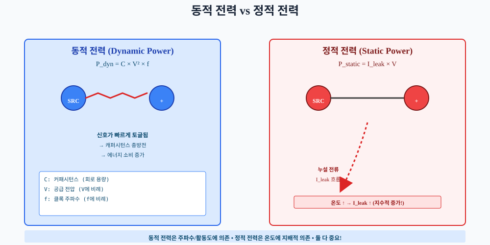
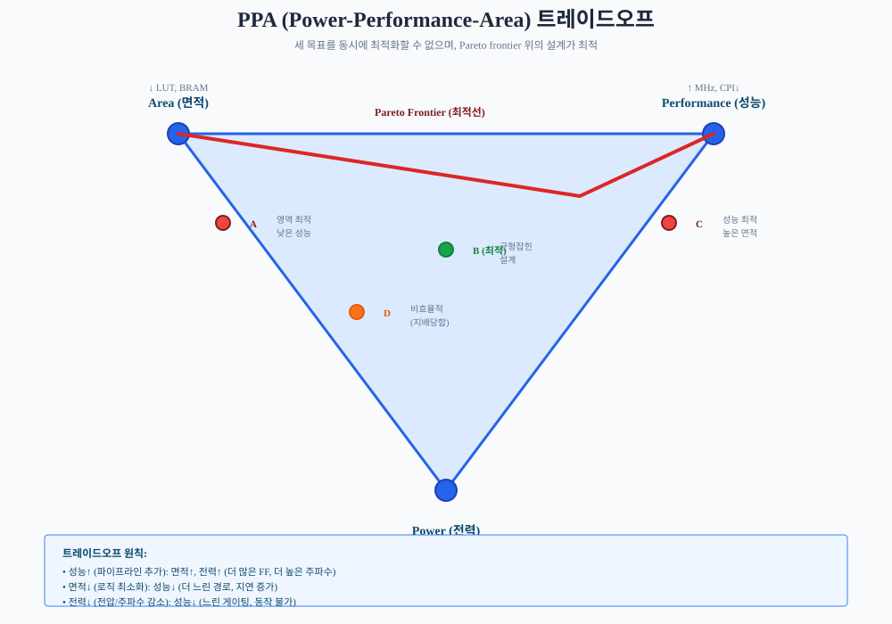
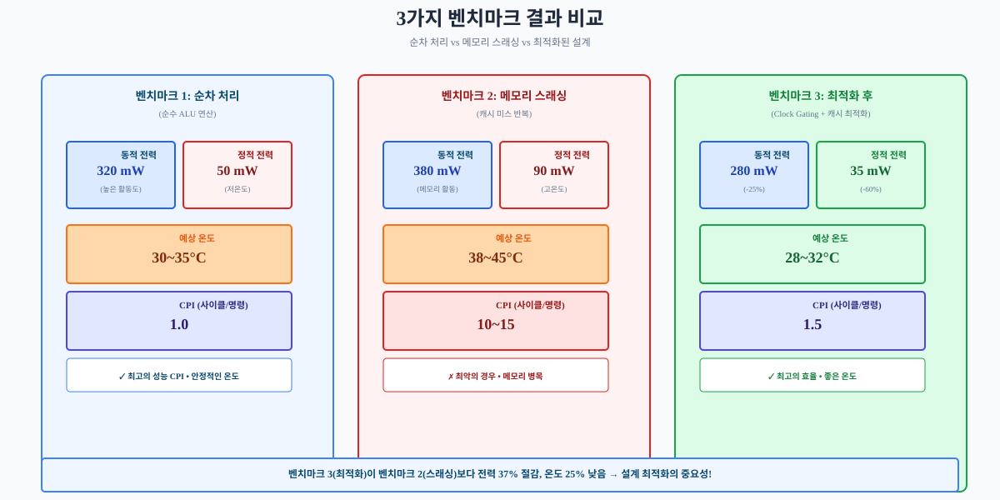
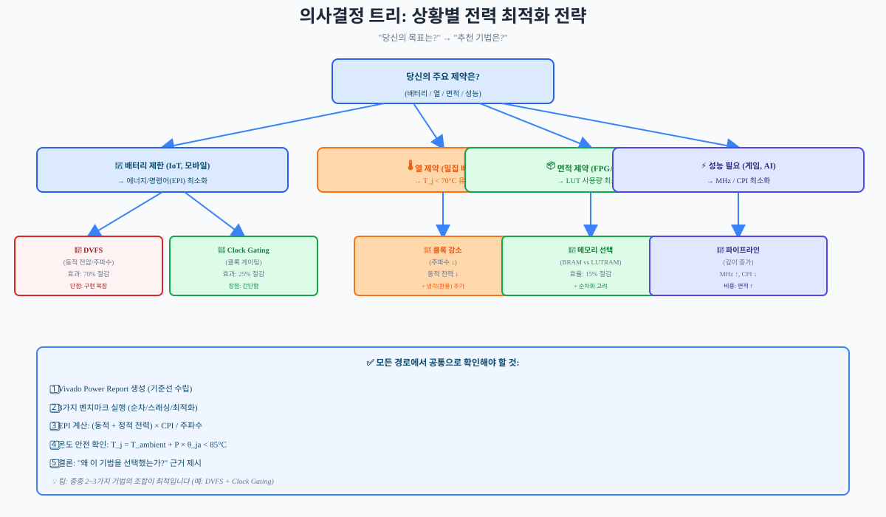

RISC-V 프로세서 설계의 마지막 단계는 전력 소비를 이해하고 관리하는 것입니다. 이 챕터에서는 FPGA 설계에서 발열이 왜 중요한지, 그리고 어떻게 측정하고 최적화할 수 있는지 배웁니다.
21.1 전력 소비의 원천
당신의 FPGA 보드가 1시간 이상 동작 중이라면, 칩 표면이 따뜻해지는 것을 느꼈을 겁니다. 적외선 카메라로 찍으면 더 뜨거운 부분과 차가운 부분이 보입니다. 이 발열은 어디서 오는 걸까요? 바로 **전자 회로가 일을 할 때 소비하는 전력**이 열로 변환되기 때문입니다.
FPGA 설계에서 전력 소비는 크게 **3가지 요소**로 나뉩니다.
1. 동적 전력(Dynamic Power)
동적 전력은 **회로가 신호를 토글(0→1→0...)할 때 소비하는 전력**입니다. 공식은 다음과 같습니다:
Pdyn = C × V² × f
여기서:
C: 회로 노드의 커패시턴스(용량성 부하) [pF = 10-12F]
V: 공급 전압 [Volt]
f: 클록 주파수 [Hz]
차원 분석을 하면 [F] × [V²] × [Hz] = [Coulomb/Volt] × [V²] × [1/second] = [Joule/second] = [Watt]가 됩니다.
Basys 3에서 실제 수치로 생각해 봅시다. 예를 들어:
C = 10,000 pF = 10 nF (전체 FPGA 칩의 평균 커패시턴스)
V = 1.0 V (공급 전압)
f = 100 MHz
이를 대입하면:
Pdyn = 10 × 10-9 × 1.0² × 100 × 106 = 1.0 W
복잡해 보이지만, 각 항(V, f, C)은 물리적 의미가 명확합니다:
비유: 춤추는 사람의 피로
동적 전력은 "춤을 출 때의 피로"처럼 생각할 수 있습니다.
강도↑(V↑): 더 큰 움직임(높은 전압) → 훨씬 피곤 (V²이므로 제곱으로 증가)
빈도↑(f↑): 더 자주 춤 (높은 주파수) → 더 피곤
체형↑(C↑): 더 큰 체격 (높은 커패시턴스) → 같은 움직임도 더 피곤
한계: 실제로는 활동도(activity factor)가 포함되어야 합니다. 모든 신호가 매 클록마다 토글되지는 않습니다. 대안: "춤 동작의 크기와 주파수, 그리고 뮤지션의 체력"이 모두 영향을 미친다고 생각하세요.

그림 21.1: 동적 전력 vs 정적 전력 — 좌측은 회로 동작 시 신호 토글과 동적 전력 발생, 우측은 회로가 유휴 상태일 때도 누설 전류로 인한 정적 전력 발생
2. 정적 전력(Static Power)
정적 전력은 **회로가 유휴(idle) 상태일 때도 발생하는 누설 전류**에 의한 전력입니다. 공식은:
Pstatic = Ileak × V
여기서:
Ileak: 누설 전류 [mA]
V: 공급 전압 [V]
흥미로운 점은 Ileak이 온도와 전압에 **지수적으로** 의존한다는 것입니다. 온도가 10°C 증가할 때마다 누설 전류가 약 2배 증가합니다. 이것이 나중에 배울 **열 폭주(thermal runaway)**의 원인입니다.
설계 A: P = 0.5W, f = 50MHz, CPI = 2.0 → EPI = 0.5 × 2.0 / 50 = 0.02 mJ/Instr
설계 B: P = 1.0W, f = 100MHz, CPI = 1.0 → EPI = 1.0 × 1.0 / 100 = 0.01 mJ/Instr
설계 B가 같은 명령당 절반의 에너지로 처리합니다!
PPA 트레이드오프
설계 최적화는 3가지 목표를 균형 있게 맞추는 과정입니다:
Performance(성능): 더 높은 주파수 또는 더 낮은 CPI
Power(전력): 더 낮은 동적/정적 전력 소비
Area(면적): 더 적은 LUT, BRAM, FF 사용
그런데 이 세 목표는 대부분 상충합니다:
성능↑ (파이프라인 추가): 면적↑, 전력↑
면적↓ (로직 최소화): 성능↓ (더 느린 구현)
전력↓ (전압 감소): 성능↓ (느린 게이팅)

그림 21.3: PPA 트레이드오프 — 삼각형의 꼭짓점 세 개(Performance, Power, Area)를 동시에 최적화할 수 없으며, Pareto frontier 위의 설계점들이 최적입니다
비유: 요리의 시간/맛/가격 삼각 관계
좋은 음식을 만들 때는 세 가지 목표가 항상 상충합니다.
빠른 조리: 품질이나 가격을 포기해야 함
맛있는 음식: 시간이 오래 걸리거나 재료비가 비쌈
저가격: 시간이나 품질을 포기
한계: 요리는 보통 선형적이지만, FPGA 설계는 기하급수적일 수 있습니다. 대안: "대학생의 공부 시간, 성적, 건강"을 생각해보세요. 이 셋을 모두 챙기기는 힘듭니다.
21.4 Vivado 전력 분석 도구
복잡한 공식을 손으로 계산할 수는 없습니다. Xilinx Vivado는 **Power Analyzer**라는 자동화된 도구를 제공합니다.
Vivado Power Analyzer 흐름 (5단계)
Step 1: 프로젝트 열기
이미 합성되고 배치/배선 완료된 프로젝트를 엽니다.
Step 2: Implementation Run 선택
"impl_1"을 우클릭 → "Report Power"
Step 3: Switching Activity 설정
Power Analyzer는 3가지 모드를 제공합니다:
Typical: 평균 활동도 가정 (기본값, α = 0.2)
Worst Case: 최악의 경우(α = 1.0, 모든 신호 토글)
Custom: 시뮬레이션 VCD 파일을 읽어서 실제 활동도 적용
Step 4: Report 생성
"Generate" 버튼 → power_report.txt 생성
Step 5: 결과 분석
보고서는 다음과 같은 형태입니다:
========================================
POWER REPORT
========================================
Dynamic Power [mW]: 350
Static Power [mW]: 150
Total Power [mW]: 500
Thermal:
Junction Temperature [°C]: 42.5
Ambient Temperature [°C]: 25.0
Power Report 해석
그림 21.4: Vivado Power Report 인터페이스 — 좌측은 모듈별 전력 분해, 우측은 신호 활동도 분포 히스토그램
Dynamic Power: 회로 동작으로 인한 전력. 주파수/활동도에 따라 크게 변함.
Static Power: 누설 전류. 온도와 공급 전압에 의존.
Total Power: Dynamic + Static
Junction Temperature(Tj): 계산된 칩 표면 온도. 공식:
Tj = Tambient + Ptotal × θja
θja: 접합-주변 열저항(thermal resistance, 약 50°C/W for Basys 3)
추정값 vs 실측값
Vivado 추정은 다음 이유로 실측과 다를 수 있습니다:
활동도 미지수: Vivado는 "typical" 활동도를 가정하지만, 실제 응용은 다를 수 있음
Post-Layout 효과: 배치/배선 후 글리치가 증가할 수 있음
온도 변화: 실제 동작 중 온도가 변하면서 정적 전력도 변함
따라서 Vivado 추정값은 상대적 비교에 더 신뢰성이 있습니다. "설계 A가 설계 B보다 20% 절약한다"는 신뢰할 수 있지만, "정확히 0.5W"는 ±15% 오차를 고려해야 합니다.
21.4A 전압/주파수 조정과 클록 게이팅
지금까지 Vivado 도구로 전력을 측정하고 분석하는 방법을 배웠습니다. 이제 실제로 발열을 줄이는 기법들을 살펴봅시다. 이번 섹션과 다음 섹션에서는 5가지 기법을 다루는데, 먼저 런타임에 동적으로 제어할 수 있는 2가지 기법부터 시작합니다.
기법 1: DVFS (Dynamic Voltage Frequency Scaling)
원리: Pdyn = CV²f 공식에서 V를 동적으로 조정합니다.
V를 절반으로 줄이면 동적 전력은 **1/4로 감소**합니다. 예:
V = 1.0V, f = 100MHz, P = 0.5W
V = 0.7V, f = 60MHz, P ≈ 0.15W (70% 절감!)
구현: 보드의 전원 공급부(voltage regulator)를 제어하여 런타임에 전압을 조정합니다. Basys 3는 기본적으로 고정 1.0V이지만, 추가 레귤레이터를 연결할 수 있습니다.
한계: 전압을 낮추면 최대 동작 주파수도 감소합니다(timing margin 감소). 또한 레귤레이터 전환에 오버헤드가 발생하므로, 1ms 이상 동작할 때만 효과적입니다.
기법 2: Clock Gating (클록 게이팅)
원리: 비사용 모듈로의 클록을 차단하여 불필요한 신호 토글을 제거합니다.
예: Ch15의 메모리 컨트롤러가 유휴 상태(IDLE)일 때, 내부 FSM과 레지스터가 계속 토글되지 않도록 클록을 차단합니다.
그림 21.7: 열 경로 — 칩 내부에서 공기로 열이 전달되는 경로와 각 단계의 온도 상승
Basys 3의 열 특성
Xilinx XC7A35T(Basys 3의 칩)는:
최대 접합 온도(Tjmax): 85°C (초과하면 칩 손상 위험)
권장 운영 범위: 0~70°C (충분한 여유도)
실측 범위: 30~55°C (실제 학생 설계, 자연냉각)
자체 냉각팬: 없음 (자연냉각만)
온도 모니터: 가능(XADC, 정확도 ±5°C)
안심 문구: Basys 3는 대부분의 학생 설계에서 문제없이 동작합니다. 발열은 정상입니다. 설계가 일하고 있다는 증거입니다!
열 폭주(Thermal Runaway)
온도가 증가하면 누설 전류가 지수적으로 증가하고, 누설 전류의 증가는 더 많은 열을 발생시킵니다. 이는 **양의 피드백 루프**입니다:
T↑ → Ileak↑ → Pstatic↑ → T↑ (악순환!)
이를 막기 위해 현대 칩들은 열 폐쇄(thermal shutdown)를 구현합니다: Tj > 80°C이면 자동으로 클록을 낮추거나 전원을 차단합니다.
Basys 3는 이 기능을 구현하므로, Tj가 85°C를 초과하기 전에 자동으로 보호됩니다.
21.6 Basys 3 실측 분석 및 최적화
지금까지 배운 개념을 실제 설계에 적용해봅시다. 3가지 벤치마크를 통해 전력 최적화의 효과를 측정합니다.
벤치마크 1: 순차 처리 (Sequential ALU Operations)
목표: 순수 ALU 연산만 반복 (메모리 접근 최소)
작업: 100,000회 덧셈 반복
x += 1, x += 2, ... (지역 변수 사용)
메모리 접근 0회
신호 활동도: 매우 높음 (매 사이클 토글)
예상 결과:
동적 전력 ↑ (높은 활동도)
정적 전력 ~ (온도 약간 상승)
온도: 30~35°C
CPI: 1.0 (파이프라인 안정적)
벤치마크 2: 메모리 스래싱 (Cache Thrashing)
목표: 캐시 미스 반복 (메모리 접근 최악의 경우)
작업: 큰 메모리 영역에 순차 접근
주소 0x1000, 0x2000, 0x3000, ... (캐시 라인별로 다름)
D-Cache 미스율: 99% (모든 접근이 미스)
메모리 버스 포화
예상 결과:
동적 전력 ↑↑ (메모리 컨트롤러 활동)
정적 전력 ↑ (높은 온도)
온도: 35~45°C
CPI: 10~15 (메모리 대기)
벤치마크 3: 최적화 후 (Optimized)
목표: Clock Gating + 캐시 친화적 코드
작업:
Clock Gating 활성화 (유휴 모듈로의 클록 차단)
캐시 친화적 루프(연속 메모리 접근)
불필요한 메모리 접근 제거
예상 결과:
동적 전력 ↓ (Clock Gating 효과)
정적 전력 ↓ (낮은 온도)
온도: 28~32°C
CPI: 1.5 (캐시 히트율 90%+)

그림 21.8: 벤치마크 결과 — 좌측부터 순차 처리(균형), 스래싱(최악), 최적화(개선). 동적 전력, 정적 전력, 온도, CPI를 비교
실측 vs 예상 괴리 분석
실제 측정할 때는 다음 요소들을 고려합니다:
Vivado 추정 ±15%: 상대값 비교 신뢰, 절대값은 검증 필요
INA226 측정 오차 ±3%: 가장 정확한 측정값
온도 센서 오차 ±5°C: XADC 사용 시
실제 주변 온도: 시험 당시 실내 온도에 의존
다음 개선 과제 (개인화)
벤치마크 측정 후, 다음 질문에 답해보세요:
병목은 동적인가, 정적인가? (동적 > 정적 비율 확인)
어느 모듈이 가장 많이 소비하는가? (Vivado Power Report 분석)
다음 개선은 무엇인가? (DVFS, Clock Gating, 메모리 최적화 중 선택)
21.7 요약 및 Part 8 마무리
핵심 정리 (9가지)
동적 전력 = CV²f — 전압과 주파수에 크게 의존. V를 10% 낮추면 P는 19% 감소!
정적 전력 = Ileak × V — 온도에 지수적 의존. 온도 관리가 정적 전력 관리의 핵심.
Vivado Power Analyzer — 자동 계산 도구. ±10~15% 오차 정상. 절대값보다 상대값 비교가 신뢰.
PPA 트레이드오프 — 성능, 전력, 면적 3가지를 동시 최적화 불가. Pareto frontier에서 선택.
5가지 절약 기법:
DVFS: 70% 절감(효과 최고) ↔ 구현 복잡
Clock Gating: 20% 절감(효과/구현 균형)
메모리 선택: 애플리케이션 의존적
파이프라인 깊이: 성능/면적 트레이드오프
병렬화: 면적/전력 트레이드오프
열 관리 — Tj = Tambient + P × θja. Basys 3는 50°C/W. 안전 여유도 충분.
에너지 효율(EPI) — EPI = P × CPI / f. 절대 전력만큼 중요.
실측 벤치마크 — 3가지 패턴(순차/스래싱/최적화)으로 최악의 경우에 대비.
FPGA vs ASIC — FPGA는 ASIC보다 전력 효율이 낮지만(약 10배), 개발 시간이 짧고 유연합니다.
연습문제
(Remember) Pdyn = C × V² × f에서 C = 10pF, V = 1.0V, f = 100MHz일 때 Pdyn은?
답: P = 10×10-12 × 1.0² × 100×106 = 1.0 mW
(Understand) 동적 전력과 정적 전력이 각각 온도와 주파수에 어떻게 의존하는지 설명하세요.
답: 동적은 f에 선형, 정적은 온도에 지수적 의존
(Apply) Vivado Power Report를 생성하고, 자신의 설계의 동적/정적 전력을 측정하세요. 스크린샷을 저장하고 수치를 기록하세요.
답: 실제 측정값 (교실에서 강사와 비교)
(Analyze) 3가지 벤치마크(순차/스래싱/최적화)를 실행하고, 각각의 전력과 CPI를 측정한 후 비교하세요. 어느 경우가 가장 효율적인가?
답: 보통 최적화 버전이 가장 낮은 전력과 좋은 CPI
(Analyze) 5가지 기법(DVFS, Clock Gating, 메모리 선택, 파이프라인, 병렬화) 중 당신의 설계에 가장 효과적일 기법을 선택하고 정당화하세요.
답: Clock Gating(간단, 효과) 또는 메모리 선택(이미 적용) 등 자유
(Evaluate) 상황별(IoT 기기, 데이터센터, 자동차 ECU) 전력 최적화 전략의 우선순위를 정하고 이유를 설명하세요.
IoT: 배터리 → DVFS, Clock Gating 우선
데이터센터: 전력비용 → 냉각, 정적 전력 우선
자동차: 신뢰성 → 열 관리, 온도 범위 우선
Ch21 마무리 및 Part 8 완성
축하합니다! 이제 당신은 FPGA 프로세서 설계의 모든 단계를 경험했습니다.
Part 1~5: 프로세서 아키텍처 (파이프라인, 캐시, 메모리)
Part 6~7: 실무 설계 (주변장치, 인터럽트)
Part 8 Ch20: 설계 최적화 (합성, 타이밍)
Part 8 Ch21: 전력 소비와 열 관리 (DVFS, Clock Gating, 아키텍처 선택)
이는 대학원 수준의 FPGA 설계자가 갖춰야 할 기본을 완성한 것입니다. 다음 단계는 고급 주제(멀티코어, 캐시 일관성, DSP, 저전력 설계)로 도전하세요.
심화 학습: 설계 의사결정 트리

그림 21.9: 의사결정 트리 — "당신의 목표는?"에서 시작하여 최적 기법을 선택하는 플로우
지금까지 배운 내용을 통합하여, 실제 설계 상황에서 어떻게 의사결정할지 정리했습니다:
배터리 제한? → DVFS 우선 (장시간 동작)
열 제약? → 클록 게이팅 + 냉각 우선
면적 제약? → 메모리 선택 최적화
성능 요구? → 파이프라인 깊이 조정
혼합 제약? → EPI로 종합 평가 후 결정
전체 소스 코드
지금 당장 전부 이해하지 않아도 됩니다. 각 절 학습 후 참조용으로 활용하세요.
ch21_power_analysis.tcl — Vivado 전력 분석 자동화
# ch21_power_analysis.tcl
# Vivado Power Report 자동 생성 스크립트
# 사용: vivado -mode batch -source ch21_power_analysis.tcl -tclargs <project_path>
if {[llength $argv] == 0} {
puts "Error: project path required"
puts "Usage: vivado -mode batch -source ch21_power_analysis.tcl -tclargs <project_path>"
exit 1
}
set proj_path [lindex $argv 0]
# 프로젝트 열기
open_project $proj_path
# Implementation run 열기
open_run impl_1
# Power Report 생성 (Typical 모드)
report_power -file power_report_typical.txt
# Power Report 생성 (Worst Case 모드)
report_power -file power_report_worst_case.txt \
-format text \
-power_domain "ALL" \
-significance all
puts "Power reports generated:"
puts " - power_report_typical.txt"
puts " - power_report_worst_case.txt"
exit
ch21_power_monitor.sv — 온보드 센서 읽기
// ch21_power_monitor.sv
// INA226 전류/전력 센서 인터페이스
// Basys 3의 온보드 INA226은 I2C(주소 0x40)로 접근 가능
module power_monitor (
input logic clk,
input logic rst_n,
// I2C 인터페이스
inout wire sda,
inout wire scl,
// 출력: 전류(mA), 전력(mW)
output logic [15:0] current_ma,
output logic [15:0] power_mw,
output logic valid
);
// INA226 레지스터 주소
localparam [7:0] ADDR_CONFIG = 8'h00;
localparam [7:0] ADDR_CURRENT = 8'h04;
localparam [7:0] ADDR_POWER = 8'h03;
// I2C Master FSM (간략화)
// 실제 구현은 I2C 마스터 컨트롤러 필요
// Current Register를 읽으면 현재값(mA) 획득
// Power Register를 읽으면 전력값(mW) 획득
// 테스트벤치에서 확인:
// INA226을 I2C로 폴링하여 current_ma, power_mw를 주기적으로 업데이트
endmodule
ch21_design_optimization.py — PPA 탐색 자동화 (선택)
# ch21_design_optimization.py
# Python을 사용한 PPA 설계점 탐색 및 Pareto frontier 계산
import matplotlib.pyplot as plt
# 설계점 예시 (Real 기반)
designs = [
{"name": "A", "perf_mhz": 45, "power_mw": 400, "area_lut": 5000},
{"name": "B", "perf_mhz": 60, "power_mw": 500, "area_lut": 6500},
{"name": "C", "perf_mhz": 80, "power_mw": 700, "area_lut": 8000},
{"name": "D", "perf_mhz": 40, "power_mw": 300, "area_lut": 4000},
]
# Pareto frontier 계산 (다중 목적 최적화)
# 목표: 성능↑, 전력↓, 면적↓ (동시만족 불가)
def is_dominated(design, others):
"""design이 다른 설계점에 지배당하는지 확인"""
for other in others:
if (other['perf_mhz'] >= design['perf_mhz'] and
other['power_mw'] <= design['power_mw'] and
other['area_lut'] <= design['area_lut'] and
(other['perf_mhz'] > design['perf_mhz'] or
other['power_mw'] < design['power_mw'] or
other['area_lut'] < design['area_lut'])):
return True
return False
pareto = [d for d in designs if not is_dominated(d, designs)]
# 결과 출력
print("Pareto Frontier (최적 설계점):")
for d in sorted(pareto, key=lambda x: x['perf_mhz']):
epi = d['power_mw'] / (d['perf_mhz'] / 1000) # 단순화
print(f" {d['name']}: {d['perf_mhz']}MHz, {d['power_mw']}mW, {d['area_lut']}LUT, EPI={epi:.1f}")
# 그래프 시각화 (2D: 성능 vs 전력)
perf = [d['perf_mhz'] for d in pareto]
power = [d['power_mw'] for d in pareto]
names = [d['name'] for d in pareto]
plt.figure()
plt.scatter(perf, power)
for i, name in enumerate(names):
plt.annotate(name, (perf[i], power[i]))
plt.xlabel('Performance (MHz)')
plt.ylabel('Power (mW)')
plt.title('PPA Trade-off: Performance vs Power (Pareto Frontier)')
plt.grid()
plt.show()